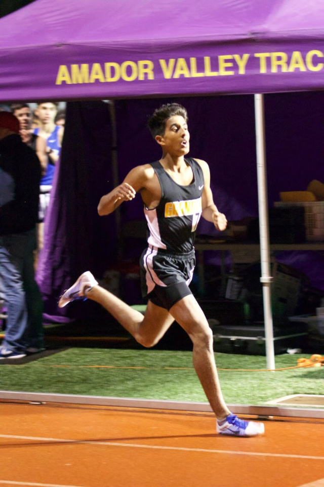
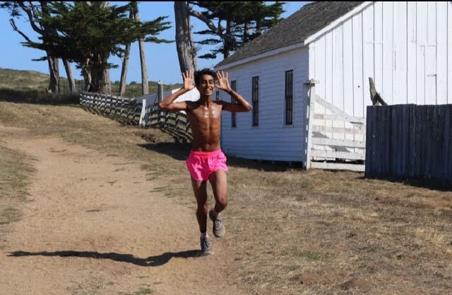
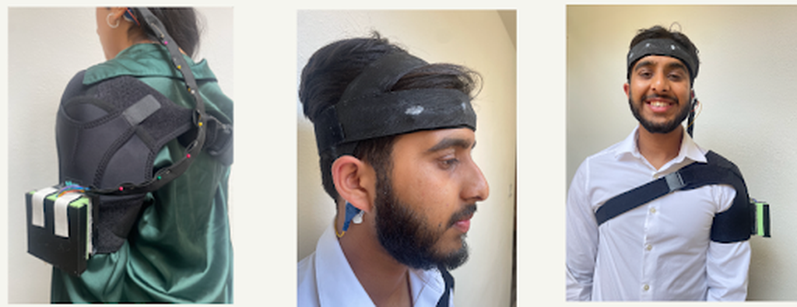

The Starting Line
There was a time when my life was measured in split times and weekly mileage. As a competitive cross-country runner, I was pushing 90 miles a week, focused on the next finish line.
That momentum came to a sudden halt when I was sidelined by a heart condition. The athlete's greatest asset became my greatest vulnerability.
It was medical device technology that brought me back to the starting line — not just physically, but professionally. That experience became the ignition point for my career: a mission to build the very systems that give people their lives back.


